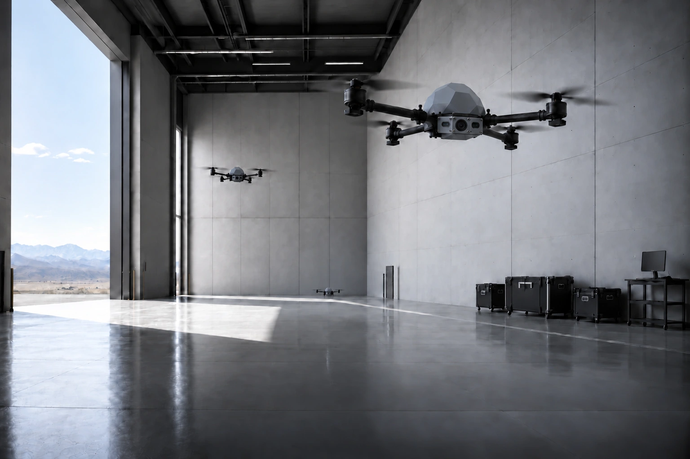
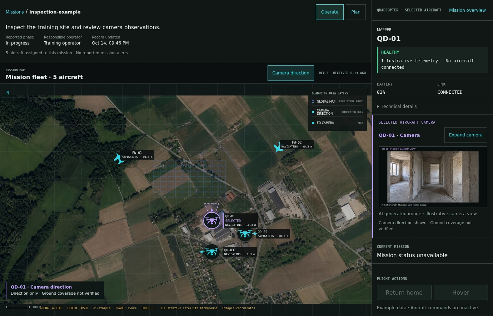
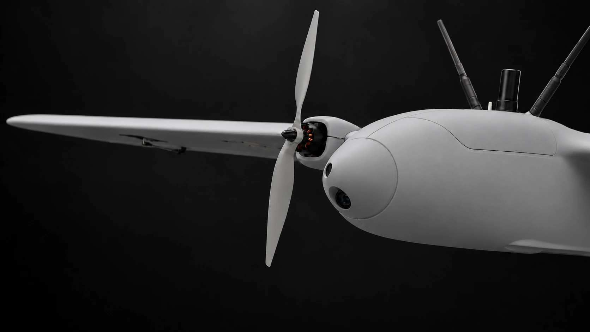

KUBECA develops drone platforms, onboard navigation and mission software for GNSS-denied and electronically contested environments. Spatial understanding brings maps and detections into one shared operational picture.

How the system works
01 - GNSS-denied navigation.
Visual navigation for fixed-wing aircraft and quadcopters, designed to support missions without reliable satellite positioning. Onboard mapping links detected objects to their surroundings, building spatial understanding in contested environments.
Fixed-wing evaluation on real flight data · 3.3 km route · 11.7 m RMS horizontal error (0.35% of route length)

How the system works
02 - Coordinate multiple aircraft.
Assign tasks by text or voice, review plans and supervise the fleet in KUBECA C2. Maps, imagery and detections build one shared operational picture.
Demonstrated in a digital twin.

How the system works
03 - Extend the reach.
A dedicated carrier drone is planned to transport and deploy local drones near the mission area, extending their reach.